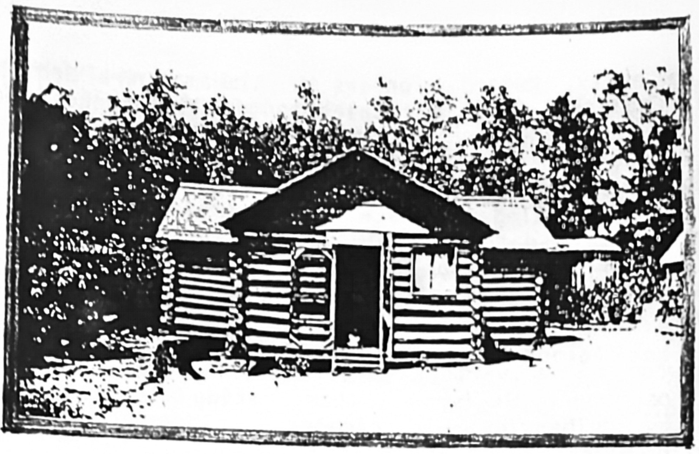

Family archive
The Old Homeplace

Most southern family history was made on a small plot of ground where a person was born, lived and died, and the old homeplace became precious and personal. One can clearly see in the mind's eye the old homeplace and revisit it in memory, years after the physical disappearance of the house through time, neglect or progress. We must all go home again in reality or memory to reaffirm who we really are; retracing treasured memories of childhood is an unerasable part of one's identity; longing to walk again in the places of childhood and have a blessed sense of belonging.
When one becomes old enough to begin looking back with an appreciation for the places and culture that shaped and nurtured him, he begins to develop a keen sense of regret because of the wasted years of apathy and indifference toward the parents who dearly loved all their sons and daughters. As our country became more industrialized, later generations dreamed of far-away places, a better economic life, and left the lonely isolation of farm life to answer the call of the bright lights of the city.
Genealogy is devoid of the interesting human details about how our ancestors lived and died. Each generation must take nourishment from the past generation and give knowledge to the next one. Hopefully, this genealogy will make fascinating reading for thousands of descendants and will be kept and cherished by many future generations. It is a tribute to the noble characteristics of intelligence and integrity, and will help us recognize the human traits of the warm, unselfish, hospitable, and kind people who inhabited the area of North Alabama.
Life was difficult for many of those early families, especially for the farmers who could not read or write and who became indebted to the local merchant and sometimes lost their mortgaged farms in the battle of merchant versus farmer. Moving to another state was sometimes a rebellion against unbearably heavy and grossly unjust taxation. It was a life in which love, determination and ingenuity usually prevailed.
Most of the early, rugged pioneers of Alabama were Scotch, Irish, Scotch-Irish or English. Some folk tales and family legends about these people show they were clannish, thrifty, hardworking, hardheaded, stubborn, but were dependable, loyal and men of their word. They drove a hard bargain but were tenderhearted and dearly loved their families. The southern states were settled by these types of people and retain these characteristics to this date, largely because relatives, friends, and neighbors settled in one section and gave a dominant tinge to creed, church and customs, which grew stronger as sons and daughters of these families married.
For the newcomers, a variety of fruits, berries, and nuts were available for those who would harvest them, making the task of feeding a family easier. Mulberries, persimmons, plums, cherries, wild blueberries, wild blackberries, wild grapes, muscadines, hickory nuts, chestnuts, walnuts, and scaly bark grew in abundance. Meat was plentiful, furnished by rabbits, turkeys, partridges, wild ducks, wild geese, pheasants and deer. Panthers, wild boars, and wild cats roamed the mountains surrounding the cleared farm land. Rivers, creeks and streams teemed with fish in clear, clean, unpolluted waters.
Contrary to what is portrayed by various news media about the wealthy, leisure life in the pre-civil-war South, most families did not have slaves and worked like a slave themselves in the fields to barely survive. This was partly due to not believing in slavery and partly because not enough money was accumulated to buy a slave, which was very expensive.
In studying the history of the Virginia Colony, everyone was connected in one way or another with the development, either as financial backers or as settlers. The early Virginia settlers were out of London dealing in the tobacco trade, a profitable business venture. They secured their importance by being better educated and financially better off than the average person. Society in Virginia was never by class, as every white man, once out of the condition of indentured servant, was free to do as he pleased, and was the equal of other white men. Social distinction did exist but was never recognized by law. Only the landowners could hold office; every man was a ruler on his own plantation and there were no feudal laws. Many immigrants came as poor men but joined the ranks of the wealthy by good management and hard work. In many instances, poor immigrants married widows and thereby gained control of their estates which gave a better start in becoming large landholders.
The position of the father in the family was a controlling factor in the movement of the children. Fathers usually willed the lands to favorite sons, which made it necessary for the others to migrate to a new region where land was plentiful and less costly. While the sons might have desired to leave sooner, departure was postponed by affection or necessity, since, in most cases, it was only after the probation of the will and disposal of the estate that enough money was available for traveling to the West or the South and acquiring cheaper lands. They plunged ahead, risking everything in a true pioneer spirit.
The Revolutionary War left its devastating effect on the personal life as well as the economic life of the early pioneers, which accounts for a large migration, during the 1785-1790 period of time, out of Virginia to the Carolinas and Georgia. In many cases, whole families moved with the sons, daughters, in-laws, grandchildren; suffering hardships and dangers that were indigenous to the raw regions. In many cases, the Revolutionary War Soldiers of VA served in the battles of South Carolina and after the war moved to that area following the Commanding Officer of their Virginia Militia.
The church was the center of community social and religious life which played an important role in family life of all generations. It acted as an anchor to help families endure the hardship and sadness of illness and early deaths at a time when medical care was not available in many areas. One can imagine the sadness of saying a tearful goodbye to parents, brothers and sisters, knowing that the possibility of seeing them again was very remote. This happened in every generation when the children of the early settlers of Alabama married and moved with in-laws over into Mississippi for a few years and then on into Ark, Okla, Missouri, and Texas.
In Alabama many unique customs were practiced. After the crops were "laid by" in July, usually someone would hold a singing class for all the children to attend at the local church. Annual protracted revivals were held at night, usually by a guest preacher, and the people would come from miles around in their wagons with the children sitting in the back of the wagon with their legs swinging free.
May is the month for Decoration Day, one of those cultural relics which is a memorial to family members deceased and is still practiced in the rural areas. A few days before the decoration date, usually on Saturday, family members gather and clean grass and debris off the graves of loved ones. On Sunday, families of friends and relatives cluster at the graves, greeting each other with smiles, hugs, kisses, hand shakes and pats on the back. They decorate the graves of white sand or grassy plots with wreaths, sprays or bouquets of live or artificial flowers. Before the days of artificial flowers, live flowers gathered from the homeplace were placed in vases filled with water. Also colored crepe paper was used to create attractive, handmade, life-like flowers. This craft is no longer practiced. After a memorial service in the church, everyone spreads the food on cloths on the ground (thus the expression of "dinner on the ground"), and later they gather inside the church for an afternoon of Gospel singing.
Another custom still practiced is gathering at a church during the summer months and have "all day singing." Sacred Harp singing is being revived, which is singing the notes rather than words, sometimes called "fa-so-la singing." It was said, "All day singing, dinner on the ground, liquor in the bushes, and the devil all around."
Very little cash was available to buy from a store so most necessities were made at home; socks were knit by hand, and most all of women's clothing was made at home. Leftover scraps of cloth from the making of dresses were used to make hand-made, attractive quilts out of necessity to keep warm in the winter when the houses were not insulated or heated as today. The art of quilting is being revived across the United States, with Quilting Clubs giving awards for the most original and attractive quilts. Scattered cotton gathered from the fields in the fall of the year was used as a filler for the quilts. "Cotton Cards" were used to remove the seeds, burrs and leaves, leaving it clean and fluffy. This was a wintertime chore. In one room, a quilting frame was suspended by cords from four hooks in the ceiling. When quilting the frame was let down to a comfortable level to quilt by hand. When not in use the cords were wound around the frame ends and it was left hanging near the ceiling, out of the way.
Fall of the year was molasses-making time. Each farmer gathered his cane by cutting the stalk, stripping the leaves and hauling it in a wagon to the mill where the juice was pressed out into the first pan for cooking. At a certain stage of cooking, it was run off into a second pan, a third pan and so on. When it was cooked to the right consistency, it was poured into buckets, jars or whatever container made available by the farmer. Homemade molasses, rich in iron, was used in baking cookies and cakes or mixing with butter for a spread on hot biscuits on a cold winter morning. The expression "slow as molasses" developed because molasses would not pour when left stored in a cold kitchen. On a winter day, it had to be spooned out of the container.
Making kraut was another task peformed [sic] during the crop "lay by" time, using the cabbages planted in early spring. After shredding the cabbage head, it was packed with salt in a crock vessel, usually a churn, allowed to ferment for a month or so then sealed in glass jars for the winter.
Before the age of super markets, most all food was grown and preserved on the farm for the long, winter months. Fruits and vegetables were canned in glass jars with metal lids or were dried on a sheet on a roof after being sliced thin, especially true of apples and peaches. Irish potatoes, sweet potatoes and turnips were harvested in the fall and stored in cellars. If a cellar was not available, the harvest was piled on the ground and covered with soil to prevent freezing and removed as needed from an opening in the dirt mound.
Another unpopular, arm-aching chore was the daily or weekly churning of clabbered milk. Milk (rich with cream) was poured into a churn and set aside so that the milk could "turn" or clabber. The churn was tilted to its side to test the readiness of the milk for churning. If the milk held together in a solid form and separated cleanly from the side of the churn then the milk needed to be churned without delay. The churning process (agitating the clabbered milk) was done by using a dasher which was usually homemade. The dasher was a stick similar to a broom handle with one end nailed to the center of a cross piece of wood. This dasher was placed inside the churn and the top tightly covered by a wooden lid
with a hole in the center for the stick. The milk had to be agitated by the up and down motion of the dasher for about 35 to 40 minutes or until small bits of butter rose to the top. The butter was gathered by the gentle sideways motion of the dasher which formed the butter into a solid mass. The butter was removed by a large spoon and placed in a bowl to be whipped to remove excess milk, and salt was added to boost the flavor. The butter was pressed into a round, wooden mold and then the handle was pushed down, placing the butter on a saucer with a design imprinted on the molded butter.
Another winter-time chore was making lye hominy. A dozen ears of white, big-grain, dry corn were shelled, the defective kernels removed and the dried corn boiled in water and lye for 8 to 10 hours. When the grains began to swell and crack open, they were removed with a large spoon or dipper into a washtub of fresh water; when cool enough to handle, all husks were removed and the lye washed off and the mixture was cooked for 8 more hours in fresh water. If a small amount of hominy was needed, the old black iron pot used for cooking in the fireplace was large enough. If a larger pot was needed, the old washpot was suitable.
To conserve wood, the fireplace was frequently used for cooking. Items such as sweet potatoes were baked in a deep iron oven. This oven had three legs and was placed over a small pile of hot coals. The lid was placed on top and more hot coals piled on the lid. The lid could be removed with a poker to check the food. The oven was also used for baking cornbread. Hot cornbread in a bowl covered with fresh milk or buttermilk was often served as the evening meal.
Soap making usually occurred in the fall or winter after hog-killing time. The fat rendered was used for making the brownish, harsh soap used for laundry and household cleaning, as well as the "Saturday night bath." One can of lye, 6 lbs of fat, and three gallons of water were cooked in the washpot for several hours. The resulting soap rose to the top, after cooling for several days it hardened and was cut into irregular shapes to be stored on shelves to dry and cure. If lye was not available, hickory ashes could be substituted.
Finally, a parting word of advice to young descendants: hold your head high, stand tall, be proud of yourself, set a goal and aim high. Earthy basics of deep moral values are as applicable today as in simpler, nostalgia times when grass was mowed, not smoked; when coke was a soft drink, not something to sniff. When we receive a harsh reminder of our own mortality, material things are not as important as once thought to be. More important are attributes of kindness, truthfulness, honesty, and integrity. A popular song of World War II sums it up this way: "Accentuate the Positive, Eliminate The Negative, and Don't Mess with Mister-In-Between." Think positive, speak positive, act positive, and be an asset, not a liability, to yourself, your family, your community, and your country. Make every day count, taking advantage of all opportunities in your young years. Old age creeps upon a person and grabs from behind, leaving him with the question, "Where did the young years go"?
Transcribed from my copy of the book. Spelling and punctuation are as printed; [sic] marks one typing slip. The essay is about pioneer and farm life in north Alabama in general and names no one in the family. Where it says "today," that is about 1990.